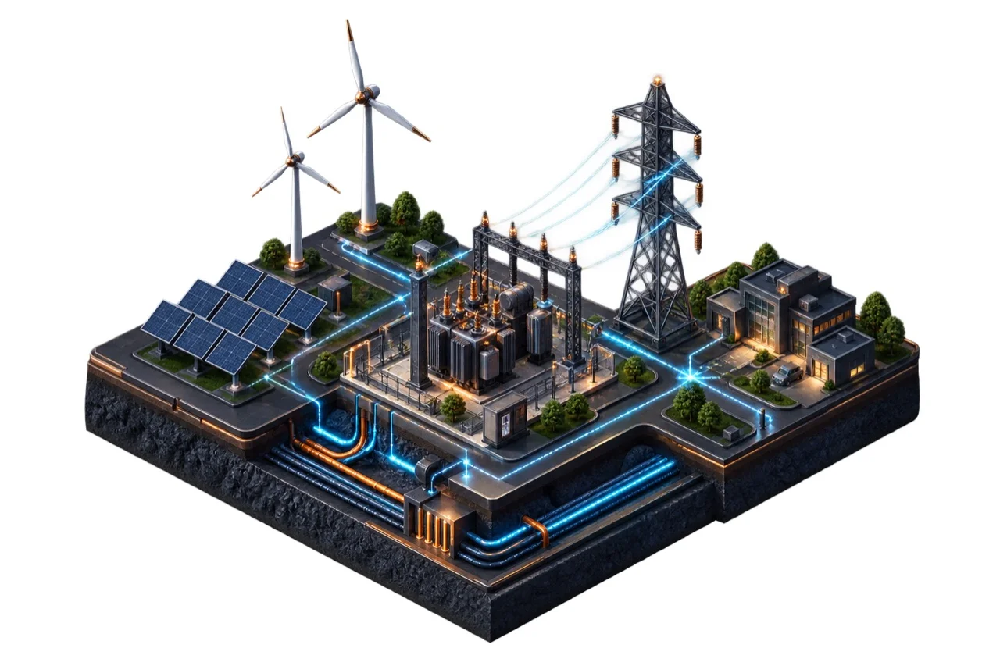

+ Engineering progress. Creating value.
The futureis electric.Make itintelligent.
I connect engineering, intelligence and business strategy to turn complex infrastructure into scalable opportunity.
Explore my workElectricity is becoming
the operating system
of everything.
Generation, grids, storage, mobility and industry are converging. The opportunity is to connect them with intelligence—and a business model that works.
My work lives at that intersection.
Engineering
depth.
Understand the asset.
Respect the physics.
Digital
intelligence.
Make the invisible visible.
Turn signals into decisions.
Commercial
impact.
Build the offer.
Make deployment repeatable.
A SYSTEM. NOT A SILO.
A new kind
of connected.

01 / 03The grid is becoming a platform.
Physical infrastructure and digital services increasingly work as one. The value lies in connecting assets, information and decisions across the electricity system.
Deep in the
technology.
Clear on
the value.
Six connected disciplines.
One end-to-end perspective.
01Electrification & energy systems
+
Connecting generation, networks, storage and electrified demand into coherent infrastructure strategies.
02Smart grids & reliability
+
From cable diagnostics and condition monitoring to network observability, asset performance and operational resilience.
03AI sensing & intelligence
+
Bringing sensing, analytics and engineering context together so asset data supports maintenance and investment decisions.
04Industrial innovation at scale
+
Translating a working pilot into a deployable offer—with installation, training, service, governance and local market readiness built in.
05Platforms & data architecture
+
Connecting fragmented assets, telemetry and software into a practical foundation for industrial decision-making.
06Commercial strategy & new offers
+
Shaping value propositions, partner ecosystems, pricing and operating models that turn technical differentiation into customer value.
From possibility
to practical impact.
Selected areas of work across offer leadership, industrial transformation and commercial architecture.
01CRITICAL INFRASTRUCTURE / MULTI-MARKET
Grid asset intelligence
CRITICAL INFRASTRUCTURE / MULTI-MARKET
Grid asset intelligence
Connecting monitoring technologies with the commercial architecture to bring them to market.
THE MANDATE
Offer positioning, value architecture, pricing and deployment playbooks for utility and industrial customers.
THE FOCUS
Move from a promising technology to a repeatable, serviceable offer.
02INDUSTRY 4.0 / IT & OT
The connected industrial asset
INDUSTRY 4.0 / IT & OT
The connected industrial asset
Connecting data, operations and capital decisions around a shared transformation path.
THE MANDATE
Connected-asset roadmaps that align technical architecture with operational needs and investment logic.
THE FOCUS
Make digitalization measurable, deployable and useful on the ground.
03COMMERCIAL INNOVATION / HARDWARE × SOFTWARE
From sensors to services
COMMERCIAL INNOVATION / HARDWARE × SOFTWARE
From sensors to services
Turning a hardware transaction into an ongoing relationship built around insight.
THE MANDATE
Market sizing, tiered pricing, unit economics and delivery assumptions for sensing and digital services.
THE FOCUS
Align recurring value for customers with a sustainable operating model.
04OFFER STRATEGY / PARTNER ECOSYSTEMS
Integrated electrification offers
OFFER STRATEGY / PARTNER ECOSYSTEMS
Integrated electrification offers
One customer challenge. A coordinated response across physical and digital infrastructure.
THE MANDATE
Bring engineering, product, supply chain, monitoring and technology partners into a coherent proposition.
THE FOCUS
Make a complex ecosystem simple for customers to understand and adopt.
Innovation.
With evidence.
My work is rooted in electrical engineering research—from fault detection in wiring networks to advanced diagnostics and intelligent sensing.
Patent filings
Invention alongside
industrial application.
Peer-reviewed publications
Research shared with the
engineering community.
Years across research & industry
From electrical engineering
to global offer leadership.
ENGINEER. STRATEGIST. BUILDER.
I work where
disciplines
meet.
The most interesting challenges rarely fit inside one discipline.
As Global Grid Offer Director at Nexans, I work at the intersection of electrification, grid reliability, Industry 4.0 and AI-driven sensing.
My focus is the complete journey: understand the engineering, define the customer value, build the ecosystem, and make deployment work at scale.
Looking past
the obvious.
Three questions shaping how I think about the next chapter of energy and industry.
What’s
next?
Working on a challenge at the intersection of infrastructure and intelligence?
Let’s explore what it could become.